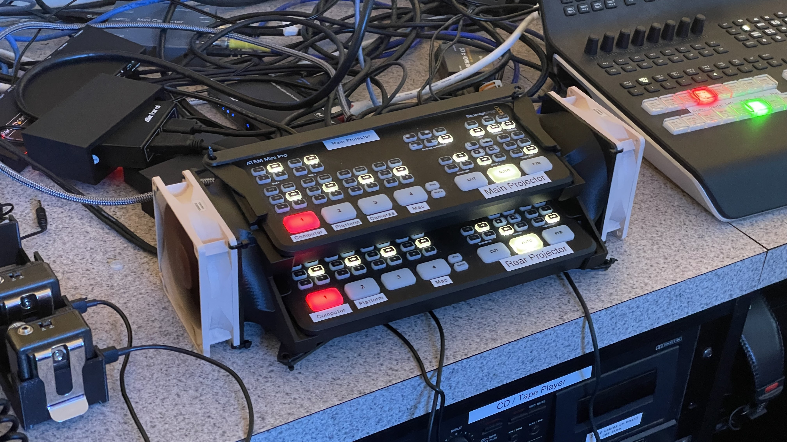
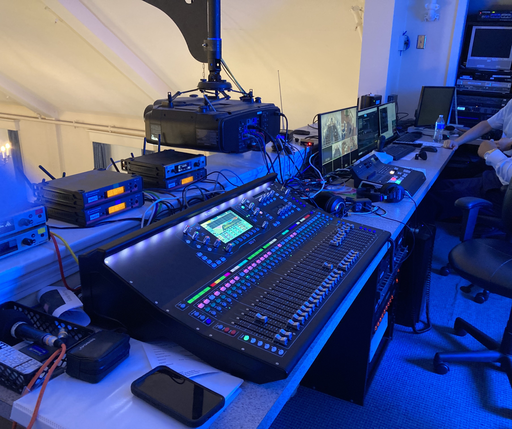
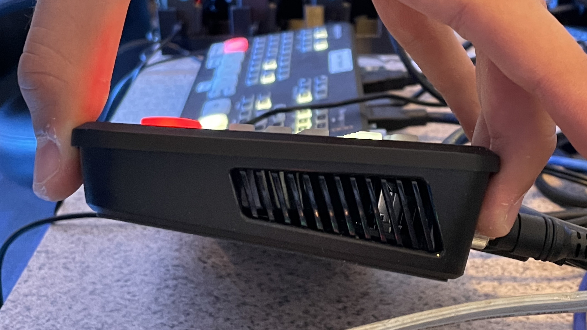

Church AV Equipment Cooling Shroud

Introduction

Background
As an active member/volunteer of my church's Audio-Visual(AV) team for the past few years, I have gotten the opportunity to help my community by improving services and facilitating community outreach events, all while learning to use live audio and video gear for streaming and in-person events.A few months ago, following countless issues of having to switch inputs for the main projector mid-service, we decided that it would be a good idea to get a dedicated switcher, similar to that which was being used to mix the camera inputs to the live stream and recording, but on a smaller scale to include all the seperate inputs (projection computer, hdmi at the platform, camera feed, etc.). This was then installed, and worked great for a few months, after which we decided to buy another identical switcher in order to control the feed going to the rear projection (allows for song lyrics to be shown only in the rear or to be used in conjunction with the main projector for speakers to easily see their presentation).
Why do this project?
While this worked great for another few months, one day we suddenly noticed that the video feed was flickering for the front projector, and later the rear projector. Upon touching the switchers and almost getting burned, we instantly knew what the problem was. We resorted to solving it by propping them up on staplers so as to give them surface area on the bottom to cool down, and point a small (and very noisy) fan at it. While everyone else seemed pretty content with the solution, "armed" with the CAD software that I had learned to use the CNC machines at CRLS, I knew I could make it better and more reliable.Idea and Design

Idea
As with any project, the first step is to envision what you want it to do and how you want it to go about doing that (how it's going to look). As the motivator for this project in the first place, the issue that we are trying to solve (or its purpose) is to lift the switchers from lying flat on the ground, to actively circulate air through both switchers, and, if possible, to make it more intuitive to use. In addition, since I had a pair of salvaged Noctua fans gathering dust, I really wanted to include them in the design in order to make the cooling system as quiet as possible. Considering that we never used any buttons other than the bottom row, and that I needed to get the the cooling vents on either side of the switcher (as shown on the left) as close as possible to each other in order to use one fan on each side to push cold air in, and warm air out the other side, I opted to go for an "in parallel" design. This would position the switchers offset vertically and horizontally with enough clearance for the buttons being used, while keeping the assembly itself as compact as possible.

Design
Now with a clear concept of what I wanted to make, the time had come to put pen to paper (or rather mouse to Fusion 360). After some pretty rigorous searching, I was unable to find any 3d model of the mixers themselves, but found perhaps an even more helpful 3d model of side brackets that had the hole cut out for the vents. Using these brackets in combination with limited manufacturer technical specifications to find the switchers' exact width, I was able to locate the brackets in such a way that they would fit a switcher in CAD, and could now move on to making the bracket that would cool both.{kind=link}
 fusion.png) This started by importing a 3d model of the fans that I had at my disposal, and then arranging the switchers exactly where I wanted them to be placed. Now for the magic that "brings it all together"! While I have never studied fluid dynamics, I though that I knew enough to direct air from the fan to each of the vents, which led me to the wonderful fusion 360 function called "loft", which bridges the gap betweer any two closed shapes, such as through a circle and rectangle, which allows me to put in the fan side shape along with the vent shape, and get a 3d component that seamlessly connects the two. After some refining of the shroud, I now had to figure out how to keep it together in one piece. Something that I had noticed when looking at the reference pictures for the mounting brackets was that it was meant to be screwed down and had wedges to hold the switcher in place, conforming to its profile. Given the constraints, I would have to design in something to keep the two sides compressed against each other, leading me to include some attachment points and cross braces that were structurally sound, yet stayed out of the way.
This started by importing a 3d model of the fans that I had at my disposal, and then arranging the switchers exactly where I wanted them to be placed. Now for the magic that "brings it all together"! While I have never studied fluid dynamics, I though that I knew enough to direct air from the fan to each of the vents, which led me to the wonderful fusion 360 function called "loft", which bridges the gap betweer any two closed shapes, such as through a circle and rectangle, which allows me to put in the fan side shape along with the vent shape, and get a 3d component that seamlessly connects the two. After some refining of the shroud, I now had to figure out how to keep it together in one piece. Something that I had noticed when looking at the reference pictures for the mounting brackets was that it was meant to be screwed down and had wedges to hold the switcher in place, conforming to its profile. Given the constraints, I would have to design in something to keep the two sides compressed against each other, leading me to include some attachment points and cross braces that were structurally sound, yet stayed out of the way.
This design was then 3d printed, the fans were wired up to a simple 12V power supply, and assembled at church with the power of zip-ties. It has been a total success in all of the goals that I set apart before embarking on this project, making the whole assembly more compact, "cooler" (no longer overheating and flickering uncontrollably), and easier to use due to its form factor and the position of the buttons.
Conclusion
Meaningfulness
While relatively simple in terms of technicality, this project is very meaningful to me and one of my favorites because of how it allowed me to take what I had learned in school in engineering and use it to directly have a positive impact on my community. As a prospective engineer, I hope to continually embody this same spirit, taking what I learn in my class and applying it in the real world, using it to help others.What would I do differently?
If I had the opportunity to start this project from the absolute beginning, I would change the following aspects of the physical design:-
Duct design
While the duct works, it is not efficient in the slightest. There is a flat spot in the duct, which reflects some of the air, pushing it back through the fan, which leads to decreased airflow through the switcher. If I were to do this again, I would like to take a deeper dive into how ducts that split into multiple outputs are designed, and apply it to this. -
Brace mounting
Another design choice that I would have liked to change is that of the cross braces. While they definitely do their job, the way that they are mounted with a single hole in both the brace itself and the brackets on either end does not allow for any sort of adjustment, leading the zip-tie mounting to be a little precarious and not very suitable for being transported. That being said, it is always in the same spot, so it is not much of an issue.